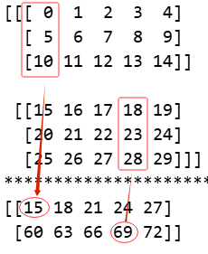
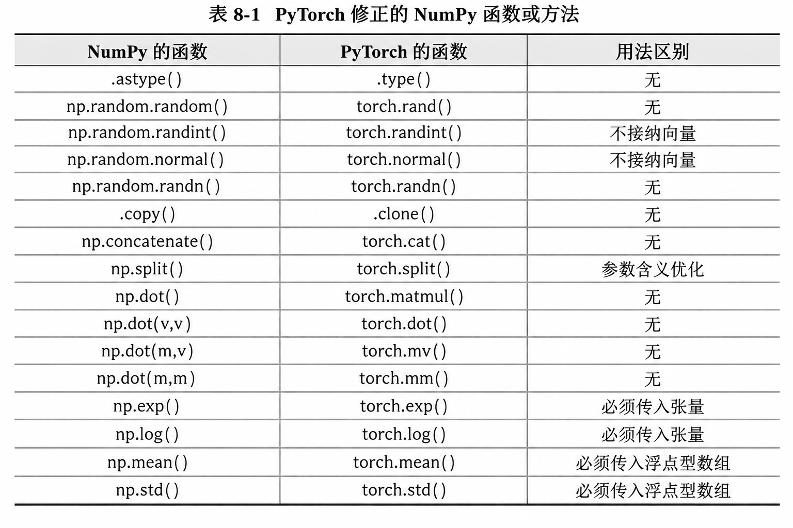

代码
import numpy as np
# 创建整数型数组
arr1 = np.array([1, 2, 3]) # 即元素均为整数
print(arr1)
# 创建浮点型数组
arr2 = np.array([1., 2, 3]) # 即元素中存在浮点数
print(arr2)
# 创建一个列表
a = [1., 2, 3]
print(a)[1 2 3]
[1. 2. 3.]
[1.0, 2, 3]2026年8月31日
此处为提供的一个代码编辑区，可以帮助你简单的使用NumPy：
导入NumPy时，通常会给他一个别名，如'np'，即import numpy as np
我们前面学习的Python，在建立一个列表时，其会为每一个元素都单独存储其数据类型。为了克服这一个缺点，一个NumPy数组只能容纳一种数据类型，以节约内存。
为方便起见，可将NumPy数组简单的分为整数型数组与浮点型数组
[1 2 3]
[1. 2. 3.]
[1.0, 2, 3]注意，使用print输出的NumPy数组，元素间是没有逗号的，这有两个好处，一是可以将其与Python列表分开，二是避免逗号与小数点之间的混淆。
同化定理告诉我们，整数型数组和浮点型数组之间的界限十分严格，那么如何将这两种数据类型的数组进行相互转化呢？既然某一个人容易被集体所同化，那只要全体共同改变，自然就可以成功。
整数型数组和浮点型数组相互转换，规范的方法是使用.astype()方法。
[1 2 3]
[1. 2. 3.]
[1 2 3]当然，在计算过程中，我们也可以把整数型转换为浮点型数组。
[1. 2. 3.]
[2. 3. 4.]
[1. 2. 3.]
[2. 4. 6.]
[0. 0. 0.]整数型数组很好升级，但是浮点型数组一般不会降级。
不同维度的数组之间，从外形上的本质区别是：
一维数组使用1层中括号表示;
二维数组使用2层中括号表示;
三维数组使用3层中括号表示。
有些函数需要传入数组的形状参数，不同维度数组的形状参数为：
一维数组的形状参数形如：x或(x,);
二维数组的形状参数形如：(x,y);
三维数组的形状参数形如：(x,y,z).
现在以同一个序列进行举例:
当数组有1层中括号，如[123]，则其为一维数组，其形状是3或(3,);
当数组有2层中括号，如[[123]]，则其为二维数组，其形状是(1,3);
当数组有3层中括号，如[[[123]]]，则其为三维数组，其形状是(1,1,3).
此处用np.ones()函数来做演示，因为其可以根据形状参数生成数组：
[1. 1. 1.]
[[1. 1. 1.]]
[[[1. 1. 1.]]]我们可以使用.shape 来查看数组的形状:
我们需要对数组的维度以及尺寸非常敏感，因为深度学习本质上是矩阵相乘，其中我们还会遇到例如concat等操作，都需要我们对尺寸非常的熟悉。
一维数组转二维数组，还是二维数组转一维数组，均要使用的是数组的重塑方法.reshape()，该方法需要传入重塑后的形状（shape）参数。 这个方法神奇的是，给定了其他维度的数值，剩下一个维度可以填-1，让它自己去计算。比如把一个5行6列的矩阵重塑为3行10列的矩阵，当列的参数10告诉它，行的参数直接可以用-1来替代，它会自己去用30除以10来计算。
首先，演示将一维数组升级为二维数组。
[0 1 2 3 4 5 6 7 8 9]
[[0 1 2 3 4]
[5 6 7 8 9]]相同的，我们可以进行降维，此处我主要介绍如何降低为行向量与列向量。
当明确知道数组每一个元素的具体数值时，可以使用np.array()函数，将Python列表转化为NumPy数组。
递增数组使用np.arange进行创建,与Python中自带的range函数相似.全称为(array_range)
arr1 = np.arange(10) # 从0开始,到10之前结束
print(arr1)
arr2 = np.arange(1, 10) # 从1开始,到10之前结束
print(arr2)
arr3 = np.arange(1, 10, 2) # 从1开始,到10之前结束,步长为2
print(arr3)
print("*"*100)
# tips: 如果想变成浮点数数组,可以使用:
arr1 = np.arange(10.)
print(arr1)
arr2 = 1.0 * np.arange(1, 10)
print(arr2)
arr3 = 0.0 + np.arange(1, 10, 2)
print(arr3)
arr4 = np.arange(1, 10, 2, dtype=float) # 从1开始,到10之前结束,步长为2
print(arr4)[0 1 2 3 4 5 6 7 8 9]
[1 2 3 4 5 6 7 8 9]
[1 3 5 7 9]
****************************************************************************************************
[0. 1. 2. 3. 4. 5. 6. 7. 8. 9.]
[1. 2. 3. 4. 5. 6. 7. 8. 9.]
[1. 3. 5. 7. 9.]
[1. 3. 5. 7. 9.][[0. 0. 0. 0.]
[0. 0. 0. 0.]
[0. 0. 0. 0.]]
[[1. 1. 1. 1.]
[1. 1. 1. 1.]
[1. 1. 1. 1.]]
[[3.14 3.14 3.14 3.14]
[3.14 3.14 3.14 3.14]
[3.14 3.14 3.14 3.14]]示例中隐藏了一个细:两个函数输出的并不是整数型的数组，这可能是为了避免插进去的浮点数被截断，所以将其设定为浮点型数组。
有时需要创建随机数组，那么可以使用np.random系列函数：
[[0.56542659 0.72590541 0.40430544 0.7775025 0.8327152 ]
[0.39271344 0.93031135 0.17020711 0.20867977 0.55185686]
[0.55878513 0.81159691 0.79947267 0.49254449 0.84692938]
[0.53963889 0.29382273 0.8183252 0.33987133 0.18780584]]如果想要将其转化到例如[a, b]范围的均匀分布随机数组，我们可以将其变成(b-a)*np.random.random((4, 5))+a
[[6 8 2]
[7 4 8]]
[[ 1.04280181 -0.62999594 1.33377588]
[ 0.94011439 1.0472782 -0.8482651 ]]
[[-1.55691934 -1.18754837 -1.07128264]
[ 0.81940408 0.57360345 -0.9041196 ]]此部分与Python中的列表一致，访问NumPy数组元素时，使用中括号，索引从0开始。
[[ 1 2 3 4]
[ 5 6 7 8]
[ 9 10 11 12]
[13 14 15 16]]
[ 5 15]
[[ 1 2 3 4]
[100 6 7 8]
[ 9 10 11 12]
[ 13 14 50 16]]根据以上实例，花式索引也就是用向量来替代普通索引的行列元素，且花式索引输出的仍然是一个向量。
此部分与列表切片完全一致。
[0 1 2 3 4 5 6 7 8 9]
[1 2 3 4]
[1 3]
[0 1 2 3 4][[ 1 2 3 4 5]
[ 6 7 8 9 10]
[11 12 13 14 15]
[16 17 18 19 20]][ 3 8 13 18]
[[ 3 4]
[ 8 9]
[13 14]
[18 19]]值得注意的是，提取某一个单独的列时，出来的结果是一个向量。其实这么做只是为了省空间，我们知道，列矩阵必须用两层中括号来存储，而形状为1000的向量，自然比形状为(1000,1)的列矩阵更省空间(节约了1000对括号)。
如果我们想让其输出为列向量也是可以的，使用我们前面.reshape()部分的方法即可：
与Python列表和Matlab不同，NumPy数组的切片仅仅是原数组的一个视图。换言之，NumPy切片并不会创建新的变量，示例如下。
[1000 1 2 3 4 5 6 7 8 9]习惯Matlab 的用户可能无法理解，但其实这正是NumPy的精妙之处。试想一下，一个几百万条数据的数组，每次切片时都创建一个新变量，势必造成大量的内存浪费。因此，NumPy的切片被设计为原数组的视图是极好的。
深度学习中为节省内存，将多次使用arr[:]=<表达式>来替代arr=<表达式>。
如果真的需要创建一个新的变量，即新变量的改变无法影响到我们的原数组，我们可以使用.copy方法。
与NumPy数组的切片一样，NumPy数组完整的赋值给另一个数组，也只是绑定。换言之，NumPy数组之间的赋值并不会创建新的变量，示例如下。
可以看出来，原数组也修改了。此时我们同样可以使用.copy方法。
数组的转置.T只对矩阵有效，因此如果遇到向量要先将其转换为矩阵。
数组的翻转方法有两个，一个是上下翻转的np.flipud()，表示up-down;一个是左右翻转的np.fliplr()，表示left-right。其中，向量只能使用np.flipud()，在数学中，向量并不是横着排的，而是竖着排的。
[[1 2 3]
[4 5 6]
[7 8 9]]
****************************************************************************************************
[[7 8 9]
[4 5 6]
[1 2 3]]
****************************************************************************************************
[[3 2 1]
[6 5 4]
[9 8 7]]想要重塑数组的形状，需要用到.reshape()方法。由于前面已经讲的比较详细了，此处就简单带过。
将两个向量拼接，将得到一个新的加长版向量
两个矩阵可以按照不同的维度进行拼接，但拼接时必须注意维度的吻合。
[[ 1 2 3]
[ 4 5 6]
[ 7 8 9]
[10 11 12]]
[[ 1 2 3 7 8 9]
[ 4 5 6 10 11 12]]最后需要说明的是，向量和矩阵之间不能拼接，其会报错。必须把向量升级为行矩阵。
arr = np.arange(10, 100, 10)
print(arr)
arr1, arr2, arr3 = np.split(arr, [2, 8])
print(arr1)
print(arr2)
print(arr3)
# np.split()函数中，给出的第二个参数[2,8]表示在索引[2]和索引[8]的位置截断
print('*'*100)
# 如果可以整除，我们也可以设置np.split()函数中，给出的第二个参数为一个整数，表示将数组平均分为几份
arr1, arr2, arr3 = np.split(arr, 3) # 将数组arr平均分为3份
print(arr1)
print(arr2)
print(arr3)[10 20 30 40 50 60 70 80 90]
[10 20]
[30 40 50 60 70 80]
[90]
****************************************************************************************************
[10 20 30]
[40 50 60]
[70 80 90]同样可以按照不同的维度进行，分裂出来的均为矩阵。
[[1 2 3 4]
[5 6 7 8]]
****************************************************************************************************
[[1 2 3 4]]
[[5 6 7 8]]
****************************************************************************************************
[[1]
[5]]
[[2 3]
[6 7]]
[[4]
[8]]我们在Python中已经简单的学习过了运算符，NumPy中的与此相似，我们此处仅以矩阵为例，向量与系数的操作与之相同。
此处不做更多介绍，读者可以自己尝试一下，本质上就是对数组中的每一个元素进行运算。
同维度数组间的运算即对应元素之间的运算，这里仅以矩阵为例，向量与系数的操作与之相同。其也是逐元素运算。
[[-1 -2 -3 -4]
[-5 -6 -7 -8]]
[[1 2 3 4]
[5 6 7 8]]请注意，此处的数组相乘，与矩阵乘法不是一个东西，要区分开。
上一节是同形状数组之间的逐元素运算，本节讲解不同形状的数组之间的运算。本教程仅讨论二维数组之内的情况，不同形状的数组之间的运算有以下规则： - 如果是向量与矩阵之间做运算，向量自动升级为行矩阵； - 如果某矩阵是行矩阵或列矩阵，则其被广播，以适配另一个矩阵的形状。
当一个形状为（x，y）的矩阵与一个向量做运算时，要求该向量的形状必须为y，运算时向量会自动升级成形状为（1，y）的行矩阵，该形状为（1，y）的行矩阵再自动被广播为形状为(x，y）的矩阵，这样就与另一个矩阵的形状适配了。
[[0.41485161 0.78265929 0.92701843]
[0.76994974 0.53513144 0.08772184]
[0.61035116 0.16799332 0.54014482]
[0.21395907 0.33564299 0.06367227]
[0.65938 0.20538019 0.43366737]
[0.18015144 0.64737421 0.3649126 ]
[0.93163041 0.54249177 0.46835495]
[0.22041155 0.28366642 0.87860216]
[0.39893533 0.19550635 0.90351227]
[0.3257175 0.12307108 0.49824693]][[-41.48516055 0. 92.70184334]
[-76.99497359 0. 8.77218368]
[-61.03511612 0. 54.014482 ]
[-21.39590694 0. 6.36722692]
[-65.93799978 0. 43.36673687]
[-18.01514368 0. 36.49126 ]
[-93.16304079 0. 46.8354948 ]
[-22.04115462 0. 87.86021554]
[-39.89353339 0. 90.35122671]
[-32.57174983 0. 49.82469259]]我们前面要求的向量，我们都默认其为行向量。
当一个形状为(x, y)的矩阵与一个列矩阵做运算时，要求该列矩阵的形状必须为(x, 1)，该形状为(x, 1)的列矩阵再自动被广播为形状为(x, y)的矩阵，这样就与另一个矩阵的形状适配了。
当一个形状为(1, y)的行矩阵与一个形状为(x, 1)的列矩阵做运算时，这俩矩阵都会被自动广播为形状为(x, y)的矩阵，这样就互相适配了。
np.dot()函数。设两个向量的形状按前后顺序分别是 5 以及 5 。从矩阵乘法的角度，有(1, 5)×(5, 1)=(1, 1)，因此输出的应该是形状为1的向量。 实际上就是向量的点积。
设向量的形状是 5，矩阵的形状是（5, 3）。从矩阵乘法的角度，有（1, 5）×(5, 3)=(1, 3)，因此输出的应该是形状为3的向量。
设矩阵的形状是（3, 5）。向量的形状是5。从矩阵乘法的角度，有(3, 5)×(5, 1)=(3, 1)，因此输出的应该是形状为3的向量。
设两个矩阵的形状按前后顺序分别是（5, 2）以及（2, 8）。从矩阵乘法的角度，有(5, 2)×(2, 8)=(5, 8)，因此输出的应该是形状为(5, 8)的矩阵。
这里我们仅列举最常见的几个
[0.0000000e+00 1.0000000e+00 1.2246468e-16]
[ 1.000000e+00 6.123234e-17 -1.000000e+00]
[ 0.00000000e+00 1.63312394e+16 -1.22464680e-16]聚合很有用，这里用矩阵演示。向量与之一致，但没有axis参数。以下在注释中介绍了6个最重要的聚合函数，其用法完全一致，仅演示其中3个。
[[0.33429933 0.97066376 0.91894035]
[0.43573928 0.16756264 0.74733526]]
按最外层维度求最大值： [0.43573928 0.97066376 0.91894035]
按次外层维度求最大值： [0.97066376 0.74733526]
整体求最大值： 0.9706637616151711[[0 1 2 3 4]
[5 6 7 8 9]]
按最外层维度求和： [ 5 7 9 11 13]
按次外层维度求和： [10 35]
整体求和： 45
1以及以后的元素求积： 15120[[0 1 2 3 4]
[5 6 7 8 9]]
按最外层维度求均值： [2.5 3.5 4.5 5.5 6.5]
按次外层维度求均值： [2. 7.]
整体求均值： 4.5
整体求标准差： 2.8722813232690143[[[ 0 1 2 3 4]
[ 5 6 7 8 9]
[10 11 12 13 14]]
[[15 16 17 18 19]
[20 21 22 23 24]
[25 26 27 28 29]]]
****************************************************************************************************
[[15 18 21 24 27]
[60 63 66 69 72]]总的来说，对于高维数组(a, b, c)，求得对某一个axis进行例如求和的操作，例如axis = 1；会将该轴变为1，且是该轴的长度数量的元素相加，例如上面这个例子，我们以axis = 1，求和时，其应该输出的结果为(2, 5)，且是三个元素相加，我们可以看出来，如下图的规则：

希望读者能理解此方法。
考虑到大型数组难免有缺失值，以上聚合函数碰到缺失值时会报错，因此出现了聚合函数的安全版本，即计算时忽略缺失值：np.nansum()、np.nanprod() 、np.nanmean()、np.nanstd()、np.nanmax()、np.nanmin()。
由于NumPy的主要数据类型是整数型数组或浮点型数组，因此布尔型数组的产生离不开：大于>、大于等于>=、等于=、不等号!=、小于<、小于等于<=。首先，我们将数组与系数作比较，以产生布尔型数组，示例如下。
[[1 2 3]
[4 5 6]]
[[False False False]
[ True True True]]
[[4 5 6]
[1 2 3]]
[[False False False]
[ True True True]]最后，还可以同时比较多个条件。Python基础里，同时检查多个条件使用的与、或、非是and、or、not。但NumPy中使用的与、或、非是&、|、~
有三个关于Ture数量的有用函数，分别是np.sum()、np.any()、np.all()。
这里的np.abs(arr) < 1可以替换成(arr < 1)&(arr > -1) 。此外，最终统计的数量是6818，其接近于概率0.6827，这符合正态分布的规律。
[1 2 3 4 5 6 7 8 9]
[9 8 7 6 5 4 3 2 1]
True从结果中看出，两个数组有相同的元素5，故会输出True
若一个普通数组和一个布尔型数组的维度相同，可以将布尔型数组作为普通数组的掩码，这样可以对普通数组中的元素作筛选。给出两个示例。
第一个示例，筛选出数组中大于、等于或小于某个数字的元素。
[[False False False False]
[ True True True True]
[ True True True True]]
[ 5 6 7 8 9 10 11 12]注意，这个矩阵进行掩码操作以后，会退化回向量。
第二个实例，筛选出数组逐元素比较的结果。
现在我们来思考一种情况：假设一个很长的数组，我想知道满足某个条件的元素们所在的索引位置，此时使用np.where()函数。
(array([ 98, 124, 161, 427, 639, 747, 845, 925, 996], dtype=int64),)
(array([124], dtype=int64),) 737.3327010075612np.where()函数的输出看起来比较怪异，它是输出了一个元组。元组第一个元素是满足条件的元素所在位置第二个元素是数组类型
PyTorch作为当前首屈一指的深度学习库，其将NumPy的语法尽数吸收，作为自己处理数组的基本语法，且运算速度从使用CPU的数组进步到使用GPU的张量。
NumPy和PyTorch的基础语法几乎一致，具体表现为：
ts = torch.tensor(arr);arr = np.array(ts)。
如果还想更细节的了解NumPy库，可以前往NumPy详细教程